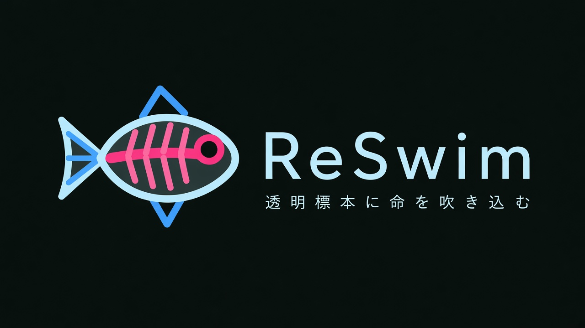
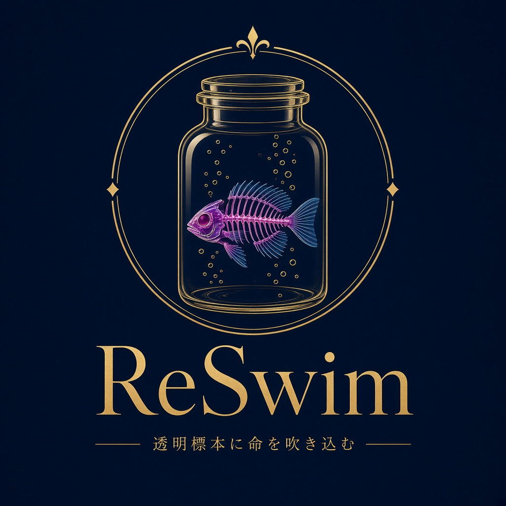
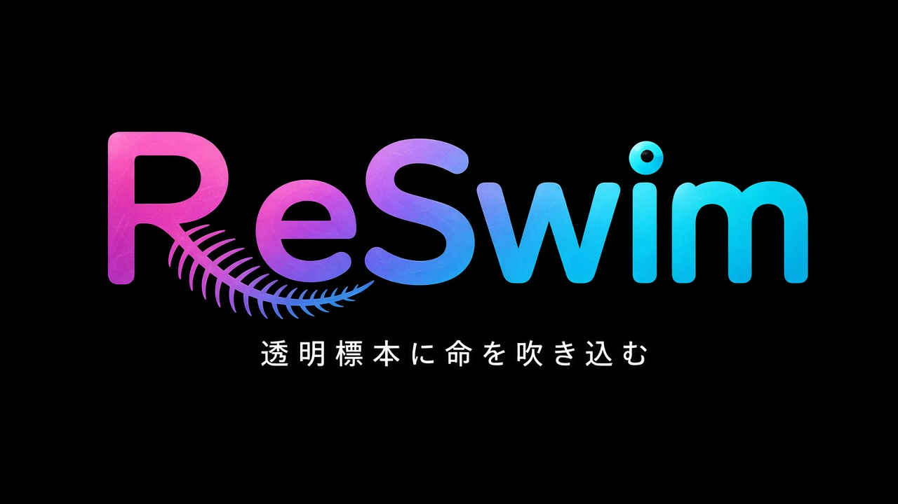
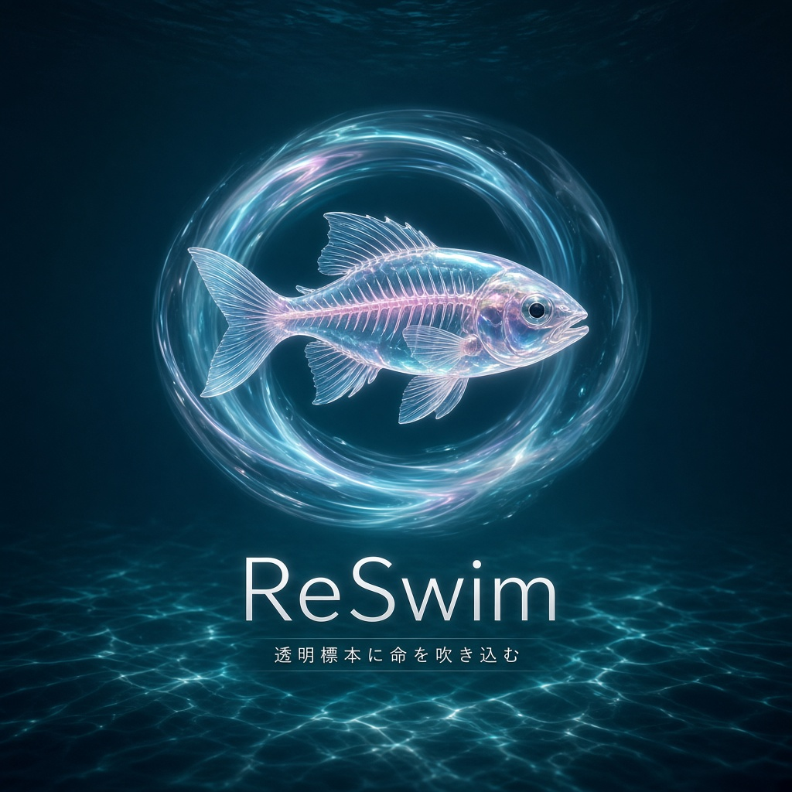

A案 ライン＋横組み
タブアイコンと同じ魚に、細いゴシックの ReSwim を横に並べた案。サイト見出しに一番入れやすい。
見出し（高さ40px）
32px

B案 標本瓶のエンブレム
金線の瓶の中で透明標本の魚が泡をまとう図柄。博物館のような高級感。細い線が多く、小さいと潰れやすい。
見出し（高さ40px）
32px

C案 文字だけのロゴ
R の脚が魚の背骨に、i の点が魚の目になった文字ロゴ。ピンクから水色へのグラデーションで、ポップで覚えやすい。
見出し（高さ40px）
32px

D案 ガラスの魚と光の輪
ガラス細工のように透ける魚を、光の輪（もう一度泳ぐ）で囲んだ案。幻想的で、トップのキービジュアル向き。
見出し（高さ40px）
32px